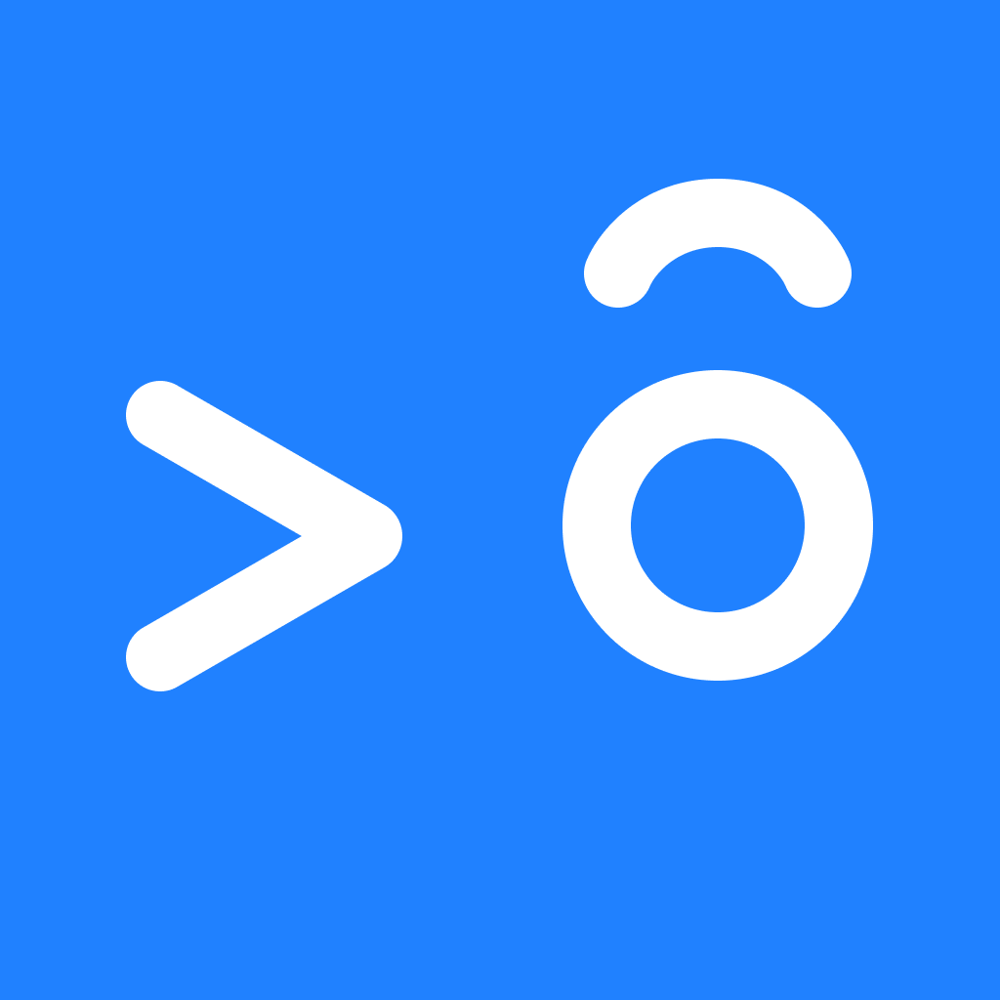

Language
English
한국어
日本語
Français
Español
Русский
Deutsch
Italiano
Português

eyeday
11:07
안약 수정
삭제
안약 이름
코솝
선택
투약 시간
아침
점심
저녁
자기 전
직접 지정할게요
하루 횟수
1회
2회
3회
4회
5회
6회
7회
8회
9회
10회
11회
12회
투약 간격
1시간
2시간
3시간
4시간
6시간
8시간
10시간
12시간
투약 시작 시간
오전
오후
5
6
7
8
9
10
11
27
28
29
30
31
32
33
저장하기
11:07
eyeday
일
8
월
9
화
10
수
11
목
12
금
13
토
14
펼치기
점안중인 안약
코솝
08:30부터 | 2회 | 12시간
무기한
잘라탄
자기 전
무기한
오늘의 점안 기록
오전 8:30
코솝
오전 8:31 1회차 완료
오후 8:30
코솝
오후 10:00
잘라탄
메모
추가 점안
안압 기록
11:07
eyeday
일
8
월
9
화
10
수
11
목
12
금
13
토
14
펼치기
점안중인 안약
코솝
08:30부터 | 2회 | 12시간
무기한
잘라탄
자기 전
무기한
오늘의 점안 기록
오전 8:30
코솝
오전 8:31 1회차 완료
안약 간격 주의
4:56
알겠어요
지금 점안하기
12:42
안압 기록
추가
L
R
mmHg
30
25
20
15
10
06/02
06/30
07/28
08/25
09/22
10/20
최근 기록
26.12.15
좌
16
우
17
26.11.17
좌
17
우
17
26.10.20
좌
18
우
18
26.09.22
좌
19
우
20
26.08.25
좌
21
우
21
11:07
글씨 크기
보통
크게
제일 크게
이 문장은 선택한 크기로 표시됩니다
저장하기